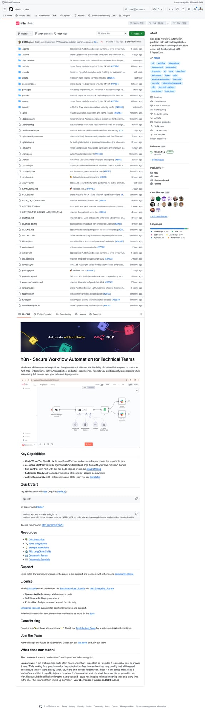
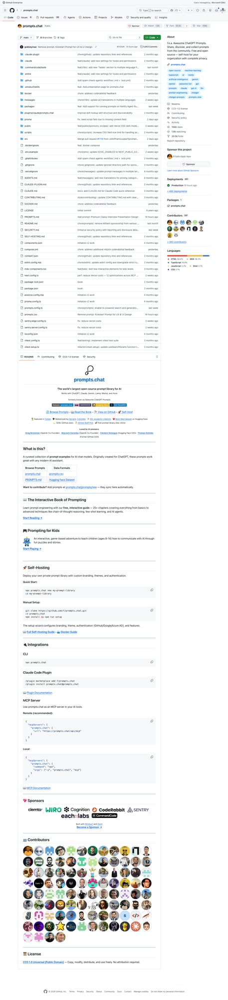
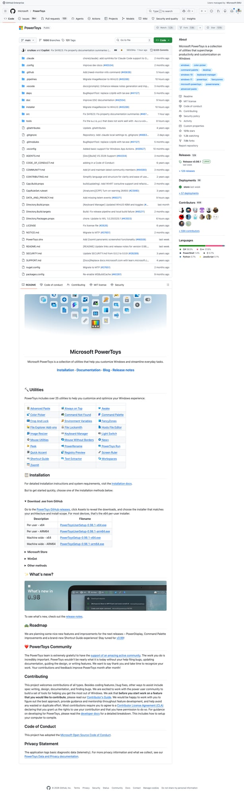
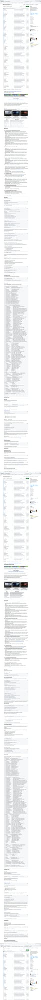

5个Agent Skills新星速报！n8n工作流、ClickHouse分析、Blueprint工程规划
Neo整理
Agent Skills 是 AI 编程助手（Claude Code、Codex、Gemini CLI 等）的可复用能力模块。今天我扫描了 SkillsMP 等平台，筛选出来自知名开源项目、实用价值高的热门 Skills。
本期介绍 5 个精选 Skills，涵盖自动化工作流、Skills 搜索安装、WPF 迁移、高性能数据库和多 Agent 工程规划。
n8n Conventions：自动化工作流开发规范
n8n Conventions Skill 是 n8n 自动化平台的开发速查卡。n8n 是 Zapier/Make 的开源替代品，拥有 400+ 集成和原生 AI Agent 能力。这个 Skill 帮助 AI 编程助手快速理解 n8n 的代码规范和架构模式。
💡 核心价值：让 AI 在修改 n8n 代码时自动遵循项目规范——TypeScript 严格模式、Vue 3 Composition API、Controller-Service-Repository 分层架构。
关键规则：
- TypeScript — 禁止
any，用unknown；优先satisfies而非类型断言 - 错误处理 — 使用
UnexpectedError，废弃ApplicationError - 前端 — Vue 3 Composition API + CSS 变量 + i18n
- 后端 — Controller → Service → Repository，依赖注入
- 数据库 — 仅支持 SQLite / PostgreSQL
# 错误处理示例
import { UnexpectedError } from 'n8n-workflow';
throw new UnexpectedError('message', { extra: { context } });
# 测试
pushd packages/cli && pnpm test
# 完整架构文档
/AGENTS.md # 架构、命令、工作流
/packages/frontend/AGENTS.md # CSS 变量、动画
Skill Lookup：搜索并安装 Agent Skills
Skill Lookup Skill 通过 MCP 协议连接 prompts.chat 注册表，让你在 AI 编程助手中直接搜索、查看和安装 Agent Skills。当用户说"找一个代码审查的 skill"或"有什么自动化 skill"时自动激活。
💡 核心价值：把 Skills 生态的发现和安装流程内嵌到编程助手中。搜索 → 预览 → 一键安装到 .claude/skills/，无需离开终端。
MCP 工具：
- search_skills — 关键词搜索，支持分类/标签过滤，最多 50 条结果
- get_skill — 获取完整 Skill 内容（SKILL.md + 参考文档 + 脚本）
安装流程：
- 搜索匹配的 Skills
- 展示标题、描述、作者、文件列表
- 用户选择后获取完整文件
- 保存到
.claude/skills/{slug}/ - 验证 SKILL.md 存在并确认安装
# 触发场景
"找一个代码审查的 skill"
"有什么数据分析的 skill？"
"帮我安装 X skill"
# MCP 调用示例
search_skills({"query": "code review", "limit": 5, "category": "coding"})
get_skill({"id": "abc123"})
WPF → WinUI 3 Migration：PowerToys 迁移指南
WPF to WinUI 3 Migration Skill 是 Microsoft PowerToys 团队在 ImageResizer 模块迁移中验证的实战指南。从命名空间映射、API 替换到安装程序修改，覆盖了 WPF → WinUI 3 的完整迁移路径。
💡 核心价值：AI 编程助手自动识别 WPF 代码并按规范迁移——命名空间 System.Windows → Microsoft.UI.Xaml，Dispatcher → DispatcherQueue，DynamicResource → ThemeResource。
迁移顺序（推荐）：
- 1️⃣ 项目文件 — 更新 TFM、NuGet、
UseWinUI - 2️⃣ 数据模型 — 无 UI 依赖，最先迁移
- 3️⃣ MVVM 框架 — 切换到 CommunityToolkit.Mvvm
- 4️⃣ 资源文件 —
.resx→.resw - 5️⃣ View/ViewModel — 从叶子页面开始
- 6️⃣ 安装程序 & CI — WiX、签名、构建事件
# 关键命名空间映射
System.Windows → Microsoft.UI.Xaml
System.Windows.Controls → Microsoft.UI.Xaml.Controls
System.Windows.Threading → Microsoft.UI.Dispatching
# 关键 API 替换
Dispatcher.Invoke() → DispatcherQueue.TryEnqueue()
MessageBox.Show() → ContentDialog（需设置 XamlRoot）
DynamicResource → ThemeResource
clr-namespace: → using:
ClickHouse IO：高性能分析数据库实践
ClickHouse IO Skill 来自 Everything Claude Code（ECC）社区项目，提供 ClickHouse 数据库的查询优化、分析模式和数据工程最佳实践。当你需要处理海量分析型工作负载时，这是最合适的 Skill。
💡 核心价值：让 AI 编程助手理解 ClickHouse 的列式存储特性——正确选择排序键、使用物化视图、优化 JOIN 和聚合查询，避免常见的性能陷阱。
适用场景：
- 日志分析 — 海量日志的实时查询和聚合
- 时序数据 — IoT 遥测、监控指标存储
- OLAP 分析 — 大规模数据集的分析报表
- 数据管道 — ETL 工作流中的分析层
# 安装（通过 ECC）
# 已包含在 everything-claude-code 中
# 典型使用
- 设计 ClickHouse 表结构和排序键
- 优化慢查询
- 构建物化视图
- 配置数据保留策略
Blueprint：多 Agent 工程规划生成器
Blueprint Skill 将一行目标描述转化为多会话、多 Agent 的分步施工计划。每个步骤都包含独立的上下文简报，让全新的 Agent 可以"冷启动"执行任何步骤——无需阅读之前的上下文。
💡 核心价值：解决 Agent 会话间上下文丢失的核心痛点。五阶段流水线：Research → Design → Draft → Review（对抗性审查）→ Register，自动生成 Markdown 计划文件。
关键特性：
- 冷启动执行 — 每步都有完整上下文，无需前序知识
- 对抗性审查 — 最强模型（如 Opus）自动审查计划
- 并行检测 — 依赖图自动识别可并行步骤
- 计划变更协议 — 步骤可拆分、插入、跳过、重排
- 零运行风险 — 纯 Markdown，无可执行代码
# 基本用法
/blueprint myapp "migrate database to PostgreSQL"
# 生成示例：plans/myapp-migrate-database-to-postgresql.md
- Step 1: 添加 PostgreSQL 驱动和连接配置
- Step 2: 为每张表创建迁移脚本
- Step 3: 更新 Repository 层
- Step 4: 添加集成测试
- Step 5: 移除旧数据库代码
# 多 Agent 项目
/blueprint chatbot "extract LLM providers into a plugin system"
# 自动识别可并行步骤 + 模型分配总结
今天介绍的 5 个 Skills 覆盖了 Agent Skills 生态的不同层面：
- 开发规范型 — n8n Conventions（工作流平台规范）
- 生态工具型 — Skill Lookup（MCP 协议搜索安装 Skills）
- 迁移指南型 — WPF → WinUI 3（微软官方实战经验）
- 数据分析型 — ClickHouse IO（列式数据库最佳实践）
- 工程规划型 — Blueprint（多 Agent 冷启动施工计划）
值得关注的趋势：Everything Claude Code (ECC) 社区正在快速扩展，提供的 Skills 已覆盖从数据库到工程规划的多个领域，且全部为纯 Markdown 格式，零安装风险。